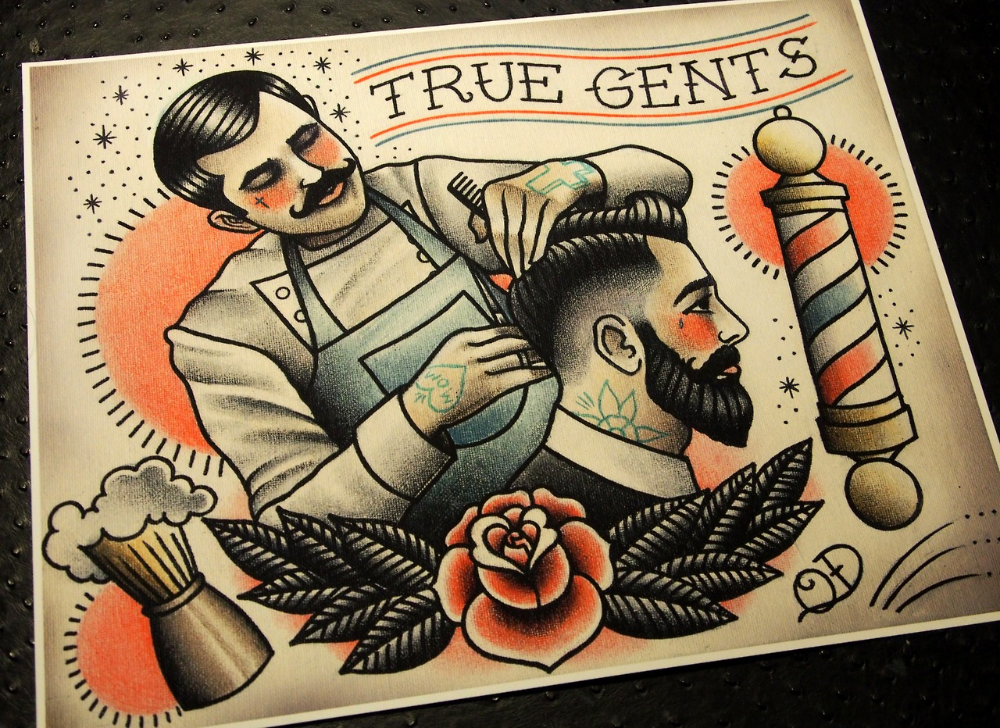

Montana's Barber Shop & Pura Vida Familia Tattoo
"Yo tengo tinta, tú tienes piel"
Historia de la Barberia
¿De dónde viene el oficio de barbero?
Este oficio nace en el siglo XIII y es denominado Cirujano-Barbero porque en esa época hacían de todo,
lo mismo te sacaban una muela, te hacían una sangría o te cortaban el pelo y afeitaban. Los barberos
normalmente aprendían el oficio de sus padres, cirujanos eran gente con estudios, los barberos cobraban
menos que los cirujanos y estaban mejor vistos en la sociedad porque contaban con la confianza de los nobles.
Remedios de la época
En esta época existían varios remedios que son los que aplicaban los barberos, uno de ellos es la
trepanación que consiste en quitar un trozo de cráneo para aliviar la presión del cerebro que, por aquel
entonces, se creía que era lo que causaba el dolor de cabeza y las migrañas.
Otras de las cosas que hacían eran las sangrías, la gente creía que en determinada época del año, por la
primavera, se tenía un exceso de sangre en el cuerpo y eso era lo que causaba el tener peor humor y estar
más protegido contra las enfermedades.
Se hacía de dos métodos, uno se realizaba poniendo sanguijuelas por el cuerpo para que fueran chupando
el exceso de sangre y la otra, mas drástica, consistía en aplicar una serie de cortes en las venas de los
brazos, cada vena se refería a un órgano del cuerpo y se extraía la cantidad de sangre que el barbero
consideraba que se vertía en un recipiente llamado sangradera.
También hacían las veces de sacamuelas y blanqueaban los dientes con agua fuerte.
¿De dónde viene el poste barbero o Barber Pole?
Los barberos, originalmente, se trasladaban de pueblo en pueblo haciendo su trabajo, sólo aquellos que
conseguían una buena reputación se afincaban en una ciudad y establecían allí su barbería. Para que la gente
los reconociera se ponía un poste blanco en la puerta que se cubría con un trapo, que normalmente estaba
lleno de sangre, cuando el barbero estaba ocupado. La verdad es que el trapo lleno de sangre no daba buena
imagen y alguien decidió cambiar el poste y pintarlo de blanco con franjas rojas, de este modo, seria
fácilmente reconocible y así poder diferenciarse de los cirujanos, ya que en el siglo XIX se separaron los
dos gremios.
Con el tiempo el poste de barbero fue evolucionando y se le agrego una franja azul que es como le conocemos
hoy día, algunos dicen que fueron los franceses y otros que los americanos los que pusieron esa franja azul
para diferenciarse del resto de barberos del mundo y realzar los colores de su bandera.